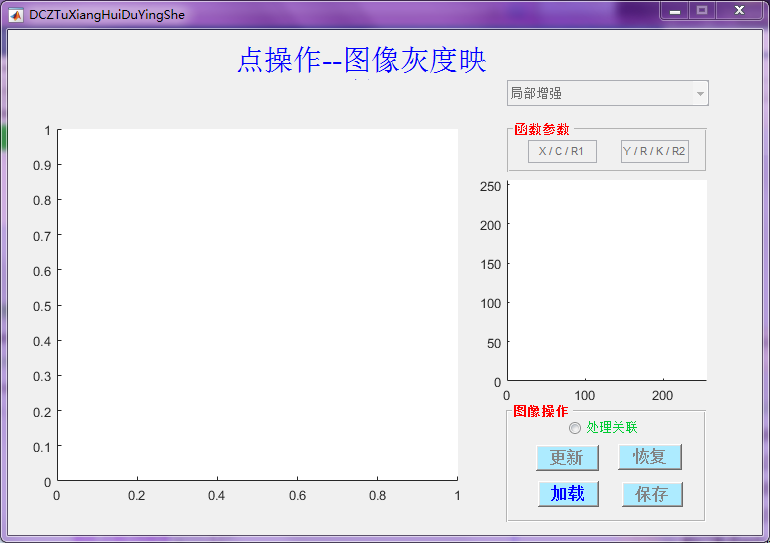

点操作---图像灰度映射
- 概述 ：主要实现图像典型的灰度映射
- 作者 ：张群伟 南昌航空大学信息工程学院自动化系
- 日期 ：[9/5/2017]
Contents

主函数
不做任何修改
function varargout = DCZTuXiangHuiDuYingShe(varargin)
% Begin initialization code - DO NOT EDIT gui_Singleton = 1; gui_State = struct('gui_Name', mfilename, ... 'gui_Singleton', gui_Singleton, ... 'gui_OpeningFcn', @DCZTuXiangHuiDuYingShe_OpeningFcn, ... 'gui_OutputFcn', @DCZTuXiangHuiDuYingShe_OutputFcn, ... 'gui_LayoutFcn', [] , ... 'gui_Callback', []); if nargin && ischar(varargin{1}) gui_State.gui_Callback = str2func(varargin{1}); end if nargout [varargout{1:nargout}] = gui_mainfcn(gui_State, varargin{:}); else gui_mainfcn(gui_State, varargin{:}); end % End initialization code - DO NOT EDIT
开始函数
相关初始化
function DCZTuXiangHuiDuYingShe_OpeningFcn(hObject, eventdata, handles, varargin)
% 全局变量 handles.img_str=' '; % 图像地址 handles.img=0; % 图像数据 handles.img_width=0; % 图像宽 handles.img_hight=0; % 图像高 % 设置 axes(handles.axes2); axis([0 256 0 256]); set(handles.select,'enable','off'); set(handles.edit_YRK,'enable','off'); set(handles.edit_XC,'enable','off'); set(handles.PB_ReNewImg,'enable','off'); set(handles.PB_SaveImg,'enable','off'); set(handles.PB_RecoverImg,'enable','off'); % Choose default command line output for DCZTuXiangHuiDuYingShe handles.output = hObject; % Update handles structure guidata(hObject, handles); % UIWAIT makes DCZTuXiangHuiDuYingShe wait for user response (see UIRESUME) % uiwait(handles.figure1);
输出函数
function DCZTuXiangHuiDuYingShe_OutputFcn(hObject, eventdata, handles) % Get default command line output from handles structure %varargout{1} = handles.output; % %% 加载图像 function PB_LoadImg_Callback(hObject, eventdata, handles)
% 加载图像 [fname,pname,index]=uigetfile({'*.bmp';'*.jpg'},'选择图片'); if index % 数据初始化 str=[pname fname]; handles.img_str=str; % 图像地址 handles.img=imread(str); % 图像数据 handles.img_old=handles.img;% 源图像 [hight,width]=size(handles.img); handles.img_width=width; % 图像宽 handles.img_hight=hight; % 图像高 % 打开使能 set(handles.select,'enable','on'); set(handles.edit_YRK,'enable','on'); set(handles.edit_XC,'enable','on'); set(handles.PB_ReNewImg,'enable','on'); set(handles.PB_SaveImg,'enable','on'); set(handles.PB_RecoverImg,'enable','on'); set(handles.select,'String',{'恒等映射','局部映射','均匀映射',... '反差映射','反转映射','分段映射','动态范围压缩','伽马校正'}); % 更新结构体数据 guidata(hObject, handles) % 显示图像 axes(handles.axes1); imshow(str); end
保存图像
function PB_SaveImg_Callback(hObject, eventdata, handles)
% 保存图像 [FileName,PathName] =uiputfile({'*.jpg;*.tif;*.png;*.gif','All Image Files';... '*.*','All Files' },'保存图像',... 'C:\Work\newfile.jpg'); if FileName==0 return; else h=getframe(handles.axes1); imwrite(h.cdata,[PathName,FileName]); end
恢复原图
function PB_RecoverImg_Callback(hObject, eventdata, handles)
% 恢复原图
handles.img=handles.img_old;
guidata(hObject,handles);
axes(handles.axes1);
imshow(uint8(handles.img));
恒等映射
function handles=hengDengYingShe(hObject,handles)
% 恒等映射 % 函数显示 x=0:256; k=get(handles.edit_YRK,'value'); y=k*x; axes(handles.axes2); plot(x,y); axis([0 256 0 256]); % 图像显示 handles.img=k.*handles.img;

局部映射
function handles=juBuYingShe(hObject,handles)
% 局部映射 % 检索相关数据 x0=get(handles.edit_XC,'value'); % X y0=get(handles.edit_YRK,'value'); % Y % 边界检查 if (x0>=256) || (y0>=256) load chirp % 鸟声 sound(y,Fs); hs=msgbox('输入参数超出指定范围！','警告','warn'); ht=findobj(hs,'type','text'); set(ht,'FontSize',11); uiwait(hs); % 等待确定 x0=0; y0=0; set(handles.edit_XC,'string',0,'value',0); set(handles.edit_YRK,'string',0,'value',0); guidata(hObject,handles); end % 函数显示 x=0:1:256; y=y0*(x<x0)+(y0+(x-x0)./(256-x0).*(256-y0)).*(x>=x0); axes(handles.axes2); plot(x,y); axis([0 256 0 256]); text(x0,y0,['(',num2str(x0),',',num2str(y0),')'],'color','b'); % 图像显示 handles.img(handles.img<=x0)=y0; handles.img(handles.img>x0)=y0+(256-y0)/(256-x0)*(handles.img(handles.img>x0)-x0);

均匀映射
function handles=junYunYingShe(hObject,handles)
% 均匀映射 % 函数显示 x=0:1:256; y=256/85.*x.*(x<85)+(0:256).*(x==85); y=y+256/85.*(x-85).*(x>85 & x<170)+(0:256).*(x==85); y=y+256/85.*(x-170).*(x>170 & x<256)+(0:256).*(x==170); axes(handles.axes2); plot(x,y); axis([0 256 0 256]); % 图像显示 a=get(handles.edit_XC,'value'); b=get(handles.edit_YRK,'value'); I=handles.img; if b==0 && a==1 I((I<85) | (I>85 & I<170) | (I>170))=256/85.*I((I<85) | (I>85 & I<170) | (I>170)); handles.img=I; else if b==1&& a==0 I(I<85)=256/85.*I(I<85); I(I>85 & I<170)=256/85.*I(I>85 & I<170); I(I>170)=256/85.*I(I>170); handles.img=I; else load chirp % 鸟声 sound(y,Fs); hs=msgbox('输入参数不合法！','警告','warn'); ht=findobj(hs,'type','text'); set(ht,'FontSize',11); uiwait(hs); % 等待确定 set(handles.edit_XC,'string',0,'value',0); set(handles.edit_YRK,'string',0,'value',0); end end

反差映射
function handles=fanChaYingShe(hObject,handles)
% 反差映射 % 函数显示 R1=get(handles.edit_XC,'value'); R2=get(handles.edit_YRK,'value'); x=0:1:256; y=x.^R1.*(x<128)+(128+(x-128).^R2).*(128<x & x<256); axes(handles.axes2); plot(x,y); % 图像显示 I=handles.img; I(I<128)=I(I<128).^R1; I(128<I & I<256)=128+(I(128<I & I<256)-128).^R2; handles.img=I;

反转映射
function handles=fanZhuanYingShe(hObject,handles)
% 反转映射 % 函数显示 x=0:1:256; y=256.*(x==0)+(256-x).*(x>=1); axes(handles.axes2); plot(x,y); % 图像显示 I=handles.img; I=256-I; handles.img=I;

分段映射
function handles=fenDuanYingShe(hObject,handles)
% 分段映射 % 提取输入参数 % 第一个点 str1=get(handles.edit_XC,'String'); % 提取字符串1的长度 LEN1=length(str1); % 检索空格的下标 len1=regexp(str1,','); % 提取坐标 X1=str2double(str1(1:len1-1)); Y1=str2double(str1(len1+1:LEN1)); % 第二个点 str2=get(handles.edit_YRK,'String'); % 提取字符串1的长度 LEN2=length(str2); % 检索空格的下标 len2=regexp(str2,','); % 提取坐标 X2=str2double(str2(1:len2-1)); Y2=str2double(str2(len2+1:LEN2)); % 函数显示 x=0:1:256; y=(Y1./X1).*x.*(x<=X1)+... (Y1+(Y2-Y1)./(X2-X1).*(x-X1)).*(X1<x & x<=X2)+... (Y2+(256-Y2)/(256-X2).*(x-X2)).*(X2<x); axes(handles.axes2); plot(x,y);% 绘制函数 axis([0 256 0 256]);% 设置坐标系显示范围 text(X1,Y1,['(',num2str(X1),',',num2str(Y1),')'],'color','b'); text(X2,Y2,['(',num2str(X2),',',num2str(Y2),')'],'color','b'); % 图像显示 I=handles.img; I(I<X1)=(Y1/X1)*I(I<X1); I(X1<I & I<X2)=(Y2-Y1)/(X2-X1).*(I(X1<I & I<X2)-X1); I(X2<I)=(256-Y2)/(256-X2).*(I(X2<I)-X2); handles.img=I;

动态范围压缩
function handles=dongTaiFanWeiYaSuo(hObject,handles)
% 动态范围压缩 % 检索相关参数 C=str2double(get(handles.edit_XC,'String')); % 函数显示 x=0:1:256; y=C.*log(1+x); axis([0 256 0 256]);% 设置坐标系显示范围 axes(handles.axes2); plot(x,y); % 图像显示 I=double(handles.img); I=C.*log(1+I); handles.img=I;

伽马校正
function handles=gaMaJiaoZheng(hObject,handles)
% 伽马校正 % 检索相关参数 C=str2double(get(handles.edit_XC,'String')); r=str2double(get(handles.edit_YRK,'String')); % 函数显示 x=0:1:256; y=C.*x.^r; axis([0 256 0 256]);% 设置坐标系显示范围 axes(handles.axes2); plot(x,y); % 图像显示 I=double(handles.img); I=C.*I.^r; handles.img=I;

更新图像
function PB_ReNewImg_Callback(hObject, eventdata, handles)
% 1 '恒等映射' 5 '反转映射' % 2 '局部映射' 6 '分段映射' % 3 '均匀映射' 7 '动态范围压缩' % 4 '反差映射' 8 '伽马校正' % 选择映射函数 switch get(handles.select,'value') case 1 % 恒等映射 handles=hengDengYingShe(hObject,handles); case 2 % 局部映射 handles=juBuYingShe(hObject,handles); case 3 % 均匀映射 handles=junYunYingShe(hObject,handles); case 4 % 反差映射 handles=fanChaYingShe(hObject,handles); case 5 % 反转映射 handles=fanZhuanYingShe(hObject,handles); case 6 % 分段映射 handles=fenDuanYingShe(hObject,handles); case 7 % 动态范围压缩 handles=dongTaiFanWeiYaSuo(hObject,handles); case 8 % 伽马校正 handles=gaMaJiaoZheng(hObject,handles); end % 更新结构体数据 guidata(hObject, handles); % 设置图像显示区域 axes(handles.axes1); % 显示图像 imshow(uint8(handles.img)); % 处理未关联，需恢复原图 if ~get(handles.radiobutton2,'value') handles.img=handles.img_old; guidata(hObject,handles); end
选择映射函数
function select_Callback(hObject, eventdata, handles) % 映射函数： % 1 '恒等映射' 5 '反转映射' % 2 '局部映射' 6 '分段映射' % 3 '均匀映射' 7 '动态范围压缩' % 4 '反差映射' 8 '伽马校正' % 提示 load chirp % 鸟声 sound(y,Fs); switch get(hObject,'value') case 1 set(handles.edit_XC,'enable','off'); % 相关设置 set(handles.edit_YRK,'string','K','enable','on'); hs=msgbox({'恒等映射' '需要输入参数K!'},'提示','help'); case 2 set(handles.edit_XC,'string','x0','enable','on'); % 相关设置 set(handles.edit_YRK,'string','y0','enable','on'); hs=msgbox({'局部映射' '需要输入参数:(x0,y0)'},'提示','help'); case 3 set(handles.edit_XC,'enable','on'); % 相关设置 set(handles.edit_YRK,'enable','on'); hs=msgbox({'均匀映射' '无参数设置'},'提示','help'); case 4 set(handles.edit_XC,'string','R1','enable','on'); % 相关设置 set(handles.edit_YRK,'string','R2','enable','on'); hs=msgbox({'反差映射' '需输入参数: R1, R2' '测试中，尚未完成'}... ,'提示','help'); case 5 set(handles.edit_XC,'enable','off'); % 相关设置 set(handles.edit_YRK,'enable','off'); hs=msgbox({'反转映射' '不需要输入参数！'},'提示','help'); case 6 set(handles.edit_XC,'string','X1,Y1','enable','on'); % 相关设置 set(handles.edit_YRK,'string','X2,Y2','enable','on'); hs=msgbox({'分段映射' '需输入两点坐标: X1,Y1 X2,Y2'}... ,'提示','help'); case 7 set(handles.edit_XC,'string','C','enable','on'); % 相关设置 set(handles.edit_YRK,'enable','off'); hs=msgbox({'动态范围压缩' '需输入参数C!'},'提示','help'); case 8 set(handles.edit_XC,'string','C','enable','on'); % 相关设置 set(handles.edit_YRK,'string','r','enable','on'); hs=msgbox({'伽马校正' '需输入两个参数: C,r'}... ,'提示','help'); end ht=findobj(hs,'type','text'); set(ht,'FontSize',11); uiwait(hs); % 等待确定 % 处理未关联，需恢复原图 if ~get(handles.radiobutton2,'value') handles.img=handles.img_old; guidata(hObject,handles); % 设置图像显示区域 axes(handles.axes1); % 显示图像 imshow(uint8(handles.img)); end function edit_YRK_Callback(hObject, eventdata, handles) % 将Y坐标值转为double类型 YR=str2double(get(hObject,'String')); % 保存到控件数据中 set(hObject,'value',YR); % 更新结构体数据 guidata(hObject, handles); function edit_YRK_CreateFcn(hObject, eventdata, handles) set(hObject,'value',1); % Hint: edit controls usually have a white background on Windows. % See ISPC and COMPUTER. if ispc && isequal(get(hObject,'BackgroundColor'), get(0,'defaultUicontrolBackgroundColor')) set(hObject,'BackgroundColor','white'); end function edit_XC_Callback(hObject, eventdata, handles) % 将Y坐标值转为double类型 XC=str2double(get(hObject,'String')); % 保存到控件数据中 set(hObject,'value',XC); % 更新结构体数据 guidata(hObject, handles); function edit_XC_CreateFcn(hObject, eventdata, handles) set(hObject,'value',1); % Hint: edit controls usually have a white background on Windows. % See ISPC and COMPUTER. if ispc && isequal(get(hObject,'BackgroundColor'), get(0,'defaultUicontrolBackgroundColor')) set(hObject,'BackgroundColor','white'); end